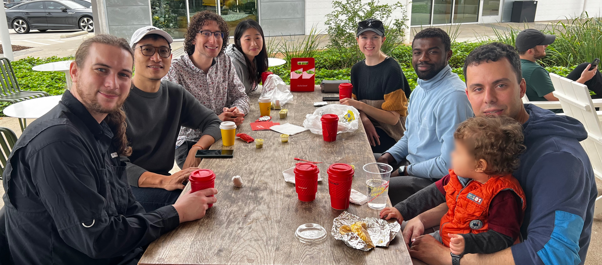

Doss-Gollin Research Group

James Doss-Gollin is an Assistant Professor in the department of Civil and Environmental Engineering at Rice University.
See his bio here
Through mission-oriented basic applied research, we address fundamental challenges in infrastructure resilience and climate adaptation.

Do you want to work on intellectually challenging and socially impactful problems? Learn about open positions.
No matching items